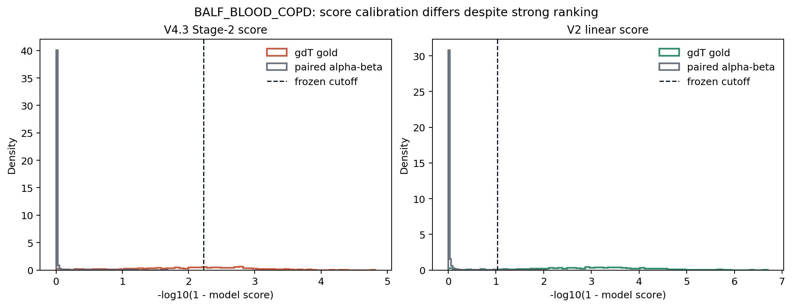
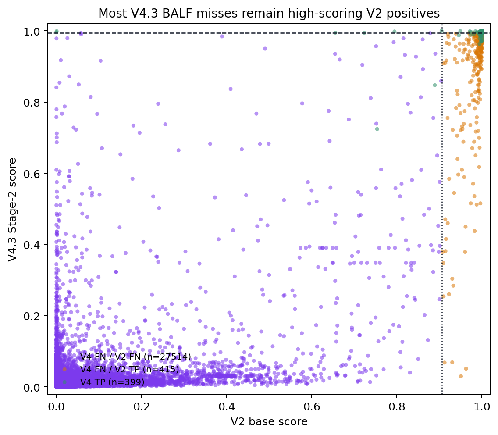
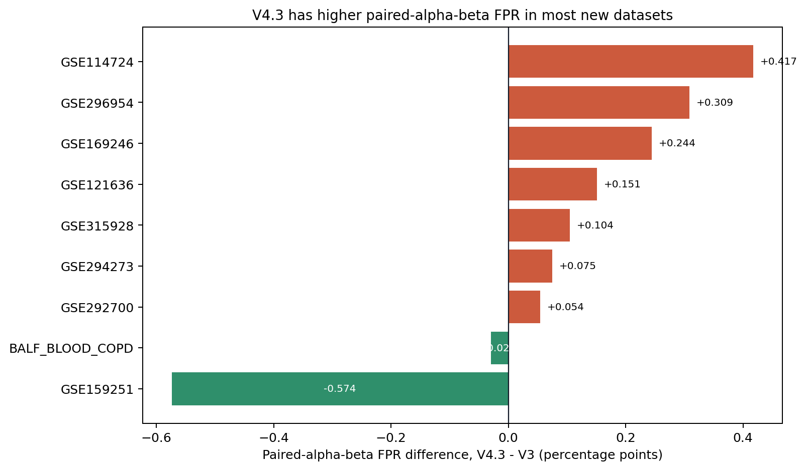
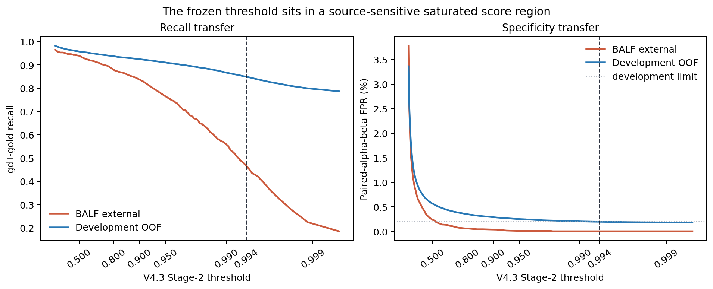
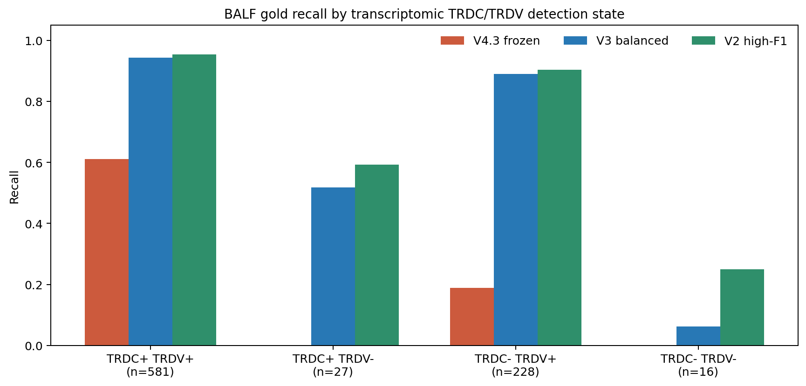
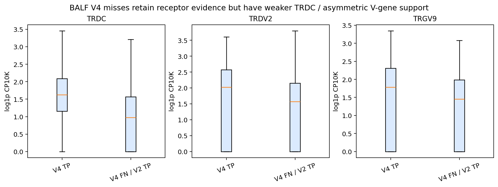
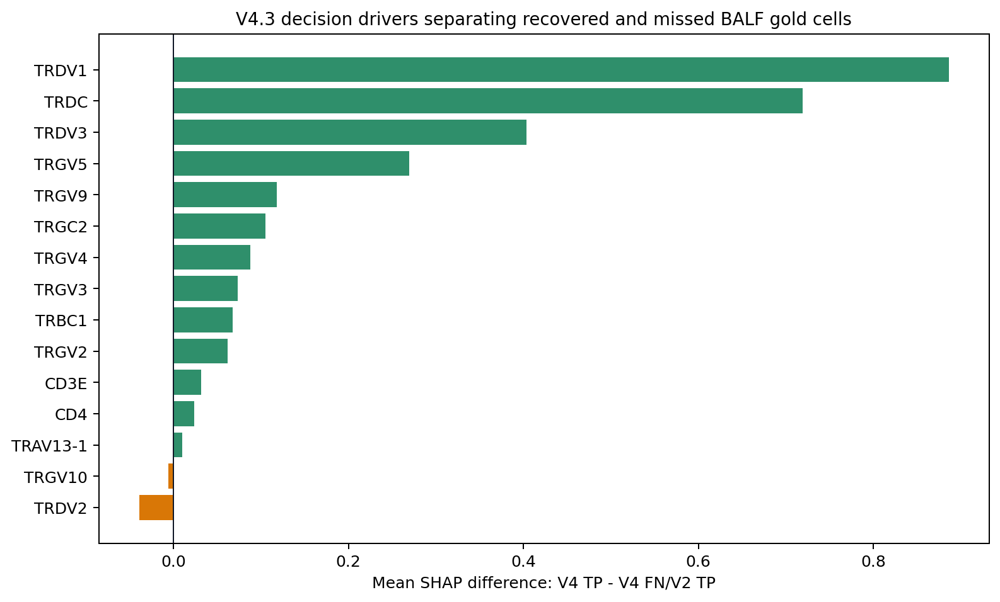
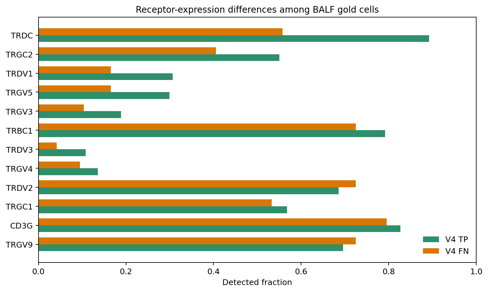

Why gdTAI V4.3 lost recall
Frozen, read-only investigation of BALF_BLOOD_COPD and the common external lockbox. No model was fitted, no cutoff was replaced, and the consumed lockbox remains unavailable for future tuning.
Conclusion
0.994098, just above the BALF positive median of 0.992373.V4.3 therefore failed as a deployable frozen classifier, even though its continuous BALF ranking is strong. A cutoff chosen after seeing BALF would recover performance but would be lockbox overfitting and is reported only as a diagnostic.
Was BALF used by V2 or V3?
| model | coefficient_fit_sources | BALF_in_coefficient_fit | BALF_in_threshold_selection | BALF_in_promotion_selection | interpretation |
|---|---|---|---|---|---|
| V2 base | HRA005041; MalteGDT; GDT_2020AUG_woCOV | False | False | False | BALF was fully unseen by V2 development. |
| V3 balanced | Exact V2 base coefficients | False | False | True | BALF influenced later Round 12/14 promotion, not fitted weights. |
| V4.3 | GSE144469; HRA005041; MalteGDT (positive truth) | False | False | False | BALF was a once-opened V4 lockbox. |
Numerical equality checks on the V2 and V3 base models found exact equality for scaler means, scaler scales, coefficients, and intercept. V3 differs through a conditional NK/TRDC gate and a threshold change from V2's 0.906359 to 0.936. On BALF positives, that gate changed only 2 of 852 scores.
| property | V2 | V3 | V4.3 |
|---|---|---|---|
| Base algorithm | Standardized logistic | Exact V2 logistic + conditional gate | Two XGBoost stages |
| Stage-2 fitted genes | 187 | V2's 187 for base score | 158 |
| NK/cytotoxic genes in base score | No | No; only conditional gate uses NK score | No |
| NK cells in gdT-vs-ab Stage-2 fitting | No explicit NK class | Conditional post-gate | No |
| Probability calibration | Implicit logistic | Implicit logistic | None |
| Deployed model matches threshold-generating model | Yes | Yes | No: OOF fold models vs final 800-tree refit |
Failure localization
| model | tp | fn | fp | tn | recall | precision | f1 | abt_fpr | nk_fpr |
|---|---|---|---|---|---|---|---|---|---|
| V4.3 frozen | 398 | 454 | 1 | 27,475 | 46.71% | 99.75% | 63.63% | 0.00% | 0.00% |
| V3 balanced | 766 | 86 | 10 | 27,466 | 89.91% | 98.71% | 94.10% | 0.03% | 0.39% |
| V2 high-F1 | 780 | 72 | 26 | 27,450 | 91.55% | 96.77% | 94.09% | 0.08% | 1.57% |
| V2 high-purity | 767 | 85 | 9 | 27,467 | 90.02% | 98.84% | 94.23% | 0.03% | 0.00% |


| failure_group | n_cells | median_stage1_score | median_stage2_score | median_v2_score | median_n_genes | median_total_counts | median_TRD_umis | median_TRG_umis | fraction_of_balf_gold |
|---|---|---|---|---|---|---|---|---|---|
| V4_FN_V2_FN | 65 | 0.4697 | 0.5593 | 0.6286 | 2878.0000 | 6256.0000 | 107.0000 | 199.0000 | 7.63% |
| V4_FN_V2_TP | 389 | 0.4139 | 0.9744 | 0.9966 | 2520.0000 | 5296.0000 | 136.0000 | 93.0000 | 45.66% |
| V4_TP | 398 | 0.2586 | 0.9981 | 0.9998 | 2457.0000 | 5029.0000 | 199.5000 | 134.0000 | 46.71% |
- Stage 1 passes 98.24% of BALF gold cells.
- CD4/Treg exclusions affect 1.41%.
- Only 43.54% pass the frozen Stage-2 cutoff directly; receptor rescue raises final recall to 46.71%.
Specificity by independent dataset

| source_gse_id | n_abt_gold | v4_3_abt_fpr | v3_abt_fpr | v4_minus_v3_fpr | v4_only_fp | v3_only_fp | mcnemar_fdr |
|---|---|---|---|---|---|---|---|
| BALF_BLOOD_COPD | 27,222 | 0.00% | 0.03% | -0.03% | 1 | 9 | 0.0242 |
| GSE114724 | 22,283 | 0.48% | 0.06% | 0.42% | 102 | 9 | 0.0000 |
| GSE121636 | 5,954 | 0.32% | 0.17% | 0.15% | 13 | 4 | 0.0490 |
| GSE159251 | 32,420 | 0.20% | 0.78% | -0.57% | 19 | 205 | 0.0000 |
| GSE169246 | 54,925 | 0.33% | 0.08% | 0.24% | 157 | 23 | 0.0000 |
| GSE292700 | 14,801 | 0.06% | 0.01% | 0.05% | 9 | 1 | 0.0242 |
| GSE294273 | 24,137 | 0.10% | 0.03% | 0.07% | 23 | 5 | 0.0014 |
| GSE296954 | 44,371 | 0.41% | 0.10% | 0.31% | 155 | 18 | 0.0000 |
| GSE315928 | 59,411 | 0.16% | 0.05% | 0.10% | 84 | 22 | 0.0000 |
Among the eight extension datasets, only GSE159251 has lower paired-alpha-beta FPR under V4.3; 7 of the seven adverse differences remain significant after paired exact McNemar testing and BH correction. BALF also improves, but BALF is the cohort where V4.3 loses more than half of its gold positives at the frozen cutoff.
Threshold transfer failure

| threshold_label | threshold | cohort | tp | fn | fp | tn | recall | precision | f1 | abt_fpr | nk_fpr | tier2_macro_nk_fpr |
|---|---|---|---|---|---|---|---|---|---|---|---|---|
| BALF diagnostic best-F1 | 0.6096 | BALF | 786 | 66 | 39 | 27,437 | 92.25% | 95.27% | 93.74% | 0.14% | 0.39% | NA |
| BALF diagnostic best-F1 | 0.6096 | Development OOF | 15,045 | 758 | 3,859 | 580,652 | 95.20% | 79.59% | 86.70% | 0.48% | 1.53% | 3.51% |
| 0.8006 diagnostic | 0.8006 | BALF | 749 | 103 | 17 | 27,459 | 87.91% | 97.78% | 92.58% | 0.06% | 0.39% | NA |
| 0.8006 diagnostic | 0.8006 | Development OOF | 14,805 | 998 | 2,730 | 581,781 | 93.68% | 84.43% | 88.82% | 0.35% | 1.02% | 2.70% |
| Frozen 0.9941 | 0.9941 | BALF | 398 | 454 | 1 | 27,475 | 46.71% | 99.75% | 63.63% | 0.00% | 0.00% | NA |
| Frozen 0.9941 | 0.9941 | Development OOF | 13,422 | 2,381 | 1,621 | 582,890 | 84.93% | 89.22% | 87.03% | 0.20% | 0.66% | 1.92% |
0.609648. It gives high BALF performance, but it was found after opening BALF and must never become the released threshold or be used as evidence of generalization.Why development selected 0.9941
At a Stage-2 threshold near 0.8006, development alpha-beta FPR remained above its 0.2% limit and tier-2 NK macro-FPR remained above its 2% limit. The threshold rose to 0.9941 to suppress high-scoring negative tails from heterogeneous development sources. BALF negatives were easier, so this development-driven cutoff became unnecessarily strict there.
OOF-to-final score mismatch
| truth_class | n_cells | oof_median | final_model_median | pearson_correlation | oof_above_frozen_threshold | final_model_above_frozen_threshold | final_model_tree_count |
|---|---|---|---|---|---|---|---|
| gdT_gold | 15,803 | 0.9904 | 0.9989 | 0.6938 | 42.97% | 79.59% | 800 |
| abT_gold | 483,048 | 0.0016 | 0.0026 | 0.9324 | 0.04% | 0.03% | 800 |
| single_ab_support | 116,952 | 0.0025 | 0.0043 | 0.9582 | 0.16% | 0.16% | 800 |
| nk_tier1 | 20,922 | 0.0391 | 0.0776 | 0.7696 | 0.46% | 0.54% | 800 |
| nk_tier2 | 80,541 | 0.0373 | 0.0609 | 0.8649 | 0.48% | 0.51% | 800 |
The OOF threshold was learned from fold models fitted with early stopping. The release candidate was then refitted as a single 800-tree model without early stopping, but no held-out probability calibration mapped that final model onto the OOF score scale. This is a model-construction defect even before considering biological source shift.
Receptor dropout and V-gene asymmetry


| TRDC_TRDV_state | model | n_cells | detected | recall | ci_low | ci_high |
|---|---|---|---|---|---|---|
| TRDC- TRDV+ | V4.3 frozen | 228 | 43 | 18.86% | 14.31% | 24.44% |
| TRDC- TRDV+ | V3 balanced | 228 | 203 | 89.04% | 84.31% | 92.46% |
| TRDC- TRDV+ | V2 high-F1 | 228 | 206 | 90.35% | 85.82% | 93.54% |
| TRDC- TRDV- | V4.3 frozen | 16 | 0 | 0.00% | 0.00% | 19.36% |
| TRDC- TRDV- | V3 balanced | 16 | 1 | 6.25% | 1.11% | 28.33% |
| TRDC- TRDV- | V2 high-F1 | 16 | 4 | 25.00% | 10.18% | 49.50% |
| TRDC+ TRDV+ | V4.3 frozen | 581 | 355 | 61.10% | 57.08% | 64.98% |
| TRDC+ TRDV+ | V3 balanced | 581 | 548 | 94.32% | 92.13% | 95.93% |
| TRDC+ TRDV+ | V2 high-F1 | 581 | 554 | 95.35% | 93.32% | 96.79% |
| TRDC+ TRDV- | V4.3 frozen | 27 | 0 | 0.00% | 0.00% | 12.46% |
| TRDC+ TRDV- | V3 balanced | 27 | 14 | 51.85% | 33.99% | 69.26% |
| TRDC+ TRDV- | V2 high-F1 | 27 | 16 | 59.26% | 40.73% | 75.49% |
Sequenced TRD V-gene calls
| TRD_v | model | n_cells | detected | recall | ci_low | ci_high |
|---|---|---|---|---|---|---|
| TRDV1 | V4.3 frozen | 173 | 99 | 57.23% | 49.77% | 64.36% |
| TRDV1 | V2 high-F1 | 173 | 155 | 89.60% | 84.15% | 93.32% |
| TRDV2 | V4.3 frozen | 614 | 265 | 43.16% | 39.30% | 47.11% |
| TRDV2 | V2 high-F1 | 614 | 569 | 92.67% | 90.33% | 94.48% |
| TRDV3 | V4.3 frozen | 52 | 34 | 65.38% | 51.80% | 76.85% |
| TRDV3 | V2 high-F1 | 52 | 48 | 92.31% | 81.83% | 96.97% |
| TRAV29/DV5 | V4.3 frozen | 3 | 0 | 0.00% | 0.00% | 56.15% |
| TRAV29/DV5 | V2 high-F1 | 3 | 2 | 66.67% | 20.77% | 93.85% |
| TRAV38-2/DV8 | V4.3 frozen | 7 | 0 | 0.00% | 0.00% | 35.43% |
| TRAV38-2/DV8 | V2 high-F1 | 7 | 5 | 71.43% | 35.89% | 91.78% |
| TRAV23/DV6 | V4.3 frozen | 1 | 0 | 0.00% | 0.00% | 79.35% |
| TRAV23/DV6 | V2 high-F1 | 1 | 0 | 0.00% | 0.00% | 79.35% |
| TRAV26-2 | V4.3 frozen | 1 | 0 | 0.00% | 0.00% | 79.35% |
| TRAV26-2 | V2 high-F1 | 1 | 1 | 100.00% | 20.65% | 100.00% |
| TRAV22 | V4.3 frozen | 1 | 0 | 0.00% | 0.00% | 79.35% |
| TRAV22 | V2 high-F1 | 1 | 0 | 0.00% | 0.00% | 79.35% |
TRDV2 is the dominant productive V call in BALF. V4 recovers only 43.2% of these cells, while the V2 linear model recovers 92.7%. SHAP analysis shows that absent TRDV1 contributes a strong negative term even when TRDV2 and TRGV9 are present. The trees learned source-specific conjunctions rather than treating alternate gdT receptor programs as interchangeable evidence.

Are the false negatives low-quality or weak truth?
| variable | v4_tp_n | v4_fn_n | v4_tp_median | v4_fn_median | rank_biserial_tp_minus_fn | mannwhitney_fdr |
|---|---|---|---|---|---|---|
| n_genes_by_counts | 398 | 454 | 2457.0000 | 2558.5000 | -0.1135 | 0.0105 |
| total_counts | 398 | 454 | 5029.0000 | 5426.5000 | -0.1359 | 0.0031 |
| pct_counts_mt | 398 | 454 | 1.2050 | 1.1706 | 0.0192 | 0.6276 |
| TRD_umis | 398 | 454 | 199.5000 | 129.0000 | 0.0961 | 0.0256 |
| TRG_umis | 398 | 454 | 134.0000 | 100.5000 | 0.0725 | 0.0845 |
No. V4 false negatives do not have fewer genes or fewer total counts; their mitochondrial fractions are similar. Cells missed by V4 but recovered by V2 have median productive TRD UMI support of 136.0, versus 199.5 among V4 TPs. These are not one-UMI ambient receptor calls. The main expression difference is partial receptor dropout/asymmetry, particularly lower TRDC and absent TRDV1 in genuine TRDV2 cells.

| gene | v4_tp_detected_fraction | v4_fn_detected_fraction | detected_fraction_difference_tp_minus_fn | v4_tp_median_expression | v4_fn_median_expression | fisher_fdr | mannwhitney_fdr |
|---|---|---|---|---|---|---|---|
| TRDC | 89.20% | 55.73% | 33.47% | 1.6307 | 0.8961 | 0.0000 | 0.0000 |
| TRGC2 | 55.03% | 40.53% | 14.50% | 0.9385 | 0.0000 | 0.0001 | 0.0000 |
| TRDV1 | 30.65% | 16.52% | 14.13% | 0.0000 | 0.0000 | 0.0000 | 0.0000 |
| TRGV5 | 29.90% | 16.52% | 13.38% | 0.0000 | 0.0000 | 0.0000 | 0.0000 |
| TRGV3 | 18.84% | 10.35% | 8.49% | 0.0000 | 0.0000 | 0.0014 | 0.0003 |
| TRBC1 | 79.15% | 72.47% | 6.68% | 1.5331 | 1.1872 | 0.0542 | 0.0001 |
| TRDV3 | 10.80% | 4.19% | 6.62% | 0.0000 | 0.0000 | 0.0009 | 0.0002 |
| TRGV4 | 13.57% | 9.47% | 4.10% | 0.0000 | 0.0000 | 0.1243 | 0.0597 |
| TRGC1 | 56.78% | 53.30% | 3.48% | 0.9872 | 0.7238 | 0.4552 | 0.0759 |
| CD3G | 82.66% | 79.52% | 3.15% | 1.5546 | 1.2943 | 0.3842 | 0.0012 |
Why V2 transfers better
- Smoother decision boundary. V2 is a standardized linear logistic model. It adds evidence across TRDV/TRGV genes and absence of many alpha/beta V genes. V4's shallow trees still form nonlinear receptor combinations and sharp magnitude splits.
- Broader positive source used by V2. V2 fitted HRA005041, MalteGDT, and GDT_2020AUG_woCOV positives. V4 used GSE144469, HRA005041, and MalteGDT; it deliberately locked GDT_2020 out. This likely reduced exposure to the Vdelta2-rich program that resembles BALF, although BALF itself remained unseen.
- Architectural mismatch. V4 Stage 2 was trained on gdT versus alpha-beta cells, not NK cells. NK limits were nevertheless imposed during threshold selection after Stage 1 allowed a substantial NK tail through. The cutoff, rather than the classifier, absorbed that conflict.
- Calibration mismatch. Fold-model OOF scores selected the cutoff, while a structurally different final 800-tree fit produced deployment scores. No source-held-out Platt/isotonic calibration or fold ensemble preserved the OOF scale.
The 29 TCR genes present in V2 but absent from V4 are not the explanation. They account for only 2.41% of V2's absolute standardized coefficient mass. Setting all 29 to zero changed BALF V2 recall from 91.55% to 91.67%.
Implications
A scientifically valid next version needs a new untouched evaluation cohort and should precommit:
- a fold-model ensemble or a separate calibration split so the selected operating point applies to the deployed predictor;
- source-held-out probability calibration and threshold stability as an explicit gate;
- alternate receptor-program handling that treats TRDV1 and TRDV2 as valid substitutes and is robust to TRDC dropout;
- NK negatives in Stage-2 training, or a stronger transcriptomic T-cell gate, instead of forcing Stage 2 to solve unseen NK tails through an extreme threshold;
- validation of recall by productive TRD V call, receptor-dropout state, source, donor, and tissue.
Input checksums and exact output paths are recorded in Integrated_dataset/logs/gdT_prediction/gdtai_v4_3_recall_failure/summary.json. No H5AD was modified.